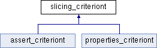

CBMC
Public Member Functions
|
List of all members
slicing_criteriont Class Reference
abstract
Inheritance diagram for slicing_criteriont:

Public Member Functions
virtual
~slicing_criteriont
()
virtual bool
operator()
(goto_programt::const_targett)=0
Constructor & Destructor Documentation
§
~slicing_criteriont()
slicing_criteriont::~slicing_criteriont
(
)
virtual
Function:
slicing_criteriont::~slicing_criteriont
Inputs:
Outputs:
Purpose:
The documentation for this class was generated from the following files:
src/goto-instrument/
full_slicer.h
src/goto-instrument/full_slicer.cpp
Generated by
1.8.12
 1.8.12
1.8.12